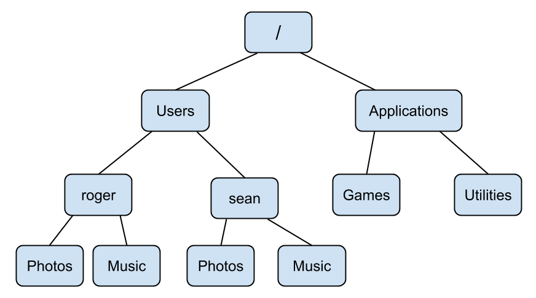

Chapter 3 Command Line Basics
Of a small spark a great fire. - Gaelic proverb
3.1 Hello Terminal!
Once you have opened up Terminal then you should see a window that looks something like this:

What you are looking at is the bash shell! Your shell will surely look different
than mine, but all bash shells have the same essential parts. As you can see in
my shell it says seans-air:~ sean$. This string of characters is called the
prompt. You type command line commands after the prompt. The prompt is just
there to let you know that the shell is ready for you to type in a command.
Press Enter on your keyboard a few times to see what happens with the prompt.
Your shell should now look like this:

If you don’t type anything after the prompt and you press Enter then nothing
happens and you get a new prompt under the old prompt. The white rectangle
after the prompt is just a cursor that allows you to edit what you have typed
into the shell. Your cursor might look like a rectangle, a line, or an
underscore, but all cursors behave the same way. After typing something into
the command line you can move the cursor back and forth with the left and right
arrow keys, just like you would when typing an email.
Now that we have pressed Enter several times our shell looks messy with all of
those old prompts! Do not worry, you are about to learn your first shell command
which will clear all of those old prompts from your shell. Type clear at the
prompt and then hit Enter. Voila! Your shell now only has the current prompt,
just like when you first opened the terminal.
Every command line command is actually a little computer program, even commands
as simple as clear. These commands all tend to have the following structure:
[command] [options] [arguments]Some simple commands like clear do not require any options or arguments.
Options are usually preceded by a hyphen (-) and they tweak the behavior
of the command. Arguments can be names of files, raw data, or other options
that the command requires. A simple command that has an argument is echo.
The echo command prints a phrase to the console. Enter echo 'Hello World!'
into the command line to see what happens:
echo 'Hello World!'## Hello World!We will be using the above syntax for the rest of the book, where on one line there
will be a command that I have entered into the command line, and then below that
command the console output of the command will appear (if there is any
console output). You can use echo to print any phrase surrounded by single
quotes ('') to the console.
If you want to see the last command press the Up arrow key. You can press
Up and Down in order to scroll through the history of commands that you’ve
entered. If you want to re-execute a past command, you can scroll to that
command then press Enter. Try getting back to the echo 'Hello World!'
command and execute it again.
3.1.1 Summary
- You type command line commands after the prompt.
clearwill clean up your terminal.echoprints text to your terminal.- You can scroll through your command history with the
UpandDownarrow keys.
3.1.2 Exercises
- Print your name to the terminal.
- Clear your terminal after completing #1.
3.2 Navigating the Command Line
You have learned two command line commands (clear and echo) which is pretty
good! Before you learn more commands we need to discuss how files and folders
are organized on your computer.
Computers are organized in a hierarchy of folders, where a folder can contain many folders and files. People who use Unix often refer to folders as directories and these terms are interchangeable. This directory hierarchy forms a tree, like the diagram below. You can use the command line to navigate these trees on your computer.

As you can see in the image below, my Debussy directory is contained in my Music directory. This is the simplest case of how directories are structured.

The directory structure on most computers is much more complicated, but the structure on your computer probably looks something like this:

There are a few special directories that you should be aware of on your
computer. The directory at the top of this tree is called the root directory.
The root directory contains all other directories, and is represented by a
slash (/). The home directory is another special directory which contains your
personal files, like your photos, documents, and the contents of your desktop.
The tilde (~) represents a shorthand for your home directory.
Imagine tracing all of the directories from your root directory to the directory you are currently viewing. This sequence of directories is called a path. The diagram below illustrates the path from the root directory to a directory called sean. This directory happens to be my home directory.

This path can be written as /Users/sean. Since this is my home directory, We
can also use ~ as a shorter way to refer to the same path. We will see this
demonstrated soon.
Open the command line if you closed it. Your shell is always in a directory,
and the directory that your shell starts in your home directory. Whatever
directory your shell is in is called the working directory. Enter the pwd command into your shell to print the working directory.
pwd## /Users/seanYou can change your working directory using the cd command. If you use the
cd command without any arguments then your working directory is changed
to your home directory.
Enter cd into the command line and then enter pwd.
cd
pwd## /Users/seanYou were in your working directory to start, and by entering cd into the
command line you did technically change directory, you just changed it
to your home directory (the directory you were in to begin with). To use cd to
change your working directory to a directory other than your home directory, you
need to provide cd with the path to another directory as an argument. You can
specify a path as either a path that is relative to your current directory,
or you can specify the absolute path to a directory starting from the root
of your computer. Let’s say we simply want to change the working directory to
one of the folders that is inside our home directory. First we need to be able to
see which folders are in our working directory. You can list the files and
folders in a directory using the ls command. Let’s use the ls command in our
home directory to list the files and folders contained within it.
ls## Desktop
## Documents
## Photos
## Music
## todo.txtIt looks like I have four folders and one text file in my home directory. Now let’s switch into the Music directory:
cd MusicAs you can see the path to the current working directory has changed:
pwd## /Users/sean/MusicI specified a relative path when I entered cd Music. The path to the
Music directory is just Music/ relative to my previous working directory.
I can go back to /Users/sean/ with the command cd .. which changes the
working directory to the folder above the current working directory:
cd ..
pwd## /Users/seanNotice that .. is also a relative path, since it specifies the directory above
your current working directory. Similarly . is the path to your current
working directory. Therefore since my current working directory is /Users/sean
then cd Music is the same as cd ./Music.
I can cd to any folder as long as I know the absolute path to that folder.
For example I can cd to /Users/sean/Music by entering the following into
the shell:
cd ~/Music
pwd## /Users/sean/MusicIt does not matter what directory the shell is in since we are using an
absolute path. Therefore we can jump straight to a directory as long as we specify
the absolute path. Notice above that we used ~ as shortcut for /Users/sean/.
Of course you should not expect yourself to have every
absolute path on your computer memorized! You can use a terminal feature called
tab completion in order to speed up typing paths and other commands. Enter
the following into your shell, and then try pressing the Tab key (on some
machines you need to press it twice):
cd ~/(press Tab)
## Desktop
## Documents
## Photos
## Music
## todo.txtPressing tab shows you a list of all files and folders inside of the ~/
directory. Now I’m going to type ~/D into my terminal and you can see what
happens when I press Tab again:
cd ~/D(press Tab)
## Desktop
## DocumentsSince I added a “D” to the path, only folders with names that start with a “D”
are listed. If I type cd ~/De into the console and then press Tab then the
command will autocomplete to cd ~/Desktop/. If I press Tab again, the console
will list all of the files and folders on my desktop.
Make sure to pause and try this yourself in your own terminal! You will not have
the same files or folders that I do, but you should try using cd and tab
completion with directories and files that start with the same letters.
3.2.1 Summary
- You can identify a specific file or folder by its path.
- The root directory (
/) contains all of the folders and files on your computer. - Your home directory (
~) is the directory where your terminal always starts. - Your terminal is always inside of a working directory.
- When you open your terminal your working directory will be set to the home directory.
- Use the
cdcommand to change your working directory. - The
pwdcommand will print the working directory. - The
lscommand will list files and folders in a directory.
3.2.2 Exercises
- Set your working directory to the root directory.
- Set your working directory to your home directory using three different commands.
- Find a folder on your computer using your file and folder browser, and then set your working directory to that folder using the terminal.
- List all of the files and folders in the directory you navigated to in #3.
3.3 Creation and Inspection
Now that you can fluidly use your terminal to bound between directories all
over your computer, it is time to learn some actions you can perform on folders and
files. One of the first actions you will probably want to take when opening up a
fresh terminal is to create a new folder or file. You can make a
directory with the mkdir command, followed by the path to the new
directory. First let’s look at the contents of my home directory:
cd
ls## Desktop
## Documents
## Photos
## Music
## todo.txtLet’s create a new directory to store some code files we am going to write
later. We can use mkdir to create a new directory called Code:
mkdir Code
ls## Desktop
## Documents
## Photos
## Music
## todo.txt
## CodeIt worked! Notice that the argument Code to the command mkdir is a relative
path, however we could have specified an absolute path. In general you should
expect Unix tools that take paths as arguments to accept both relative and
absolute paths.
There are a few different ways to create a new file on the command line. The
most simple way to create a blank file is to use the touch command, followed
by the path to the file you want to create. In this example we are going to create
a new journal entry using touch:
touch journal-2017-01-24.txt
ls## Desktop
## Documents
## Photos
## Music
## todo.txt
## Code
## journal-2017-01-24.txtA new file has been created! We have been using ls to list the files and folders
in the current directory, but using ls alone does not differentiate between
which of the listed items are folders and which are files. Thankfully you can
use the -l option with ls in order to get a long listing of files in
a directory.
ls -l## drwxr-xr-x 2 sean staff 68 Jan 24 12:31 Code
## drwxr-xr-x 2 sean staff 94 Jan 20 12:44 Desktop
## drwxr-xr-x 2 sean staff 24 Jan 20 12:44 Documents
## drwxr-xr-x 2 sean staff 68 Jan 20 12:36 Music
## drwxr-xr-x 2 sean staff 68 Jan 20 12:35 Photos
## -rw-r--r-- 1 sean staff 90 Jan 24 11:33 journal-2017-01-24.txt
## -rw-r--r-- 1 sean staff 70 Jan 24 10:58 todo.txtThere is a row in the resulting table for each file or folder. If the entry in the
first column is a d, then the row in the table corresponds to a directory,
otherwise the information in the row corresponds to a file. As you can see in my
home directory there are five directories and two files. The string of
characters following the d in the case of a directory or following the first
- in the case of a file represent the permissions for that file or directory.
We will cover permissions in a later section. The columns of this table also show
who created the file, the group that the creator of the file belongs to (we will
cover groups later when we cover permissions), the size of the file, the time
and date when the file was last modified, and then finally the name of the file.
Now that we have created a file there are a few different ways that we can inspect
and edit this file. First let’s use the wc command to view the word
count and other information about the file:
wc todo.txt## 3 14 70 todo.txtThe wc command displays the number of lines in a file followed by the number
of words and then the number of characters. Since this file looks pretty small
(only three lines) let’s try printing it to the console using the cat command.
cat todo.txt## - email Jeff
## - write letter to Aunt Marie
## - get groceries for ShabbatThe cat command is often used to print text files to the terminal, despite
the fact that it is really meant to concatenate files. You can see this
concatenation in action in the following example:
cat todo.txt todo.txt## - email Jeff
## - write letter to Aunt Marie
## - get groceries for Shabbat
## - email Jeff
## - write letter to Aunt Marie
## - get groceries for ShabbatThe cat command will combine every text file that is provided as an argument.
Let’s take a look at how we could view a larger file. There is a file inside the Documents directory:
ls Documents## a-tale-of-two-cities.txtLet’s examine this file to see if it is reasonable to read it with cat:
wc Documents/a-tale-of-two-cities.txt## 17 1005 5799 Documents/a-tale-of-two-cities.txtWow, over 1000 words! If we use cat on this file it is liable to take up our
entire terminal. Instead of using cat for this large file we should use
less, which is a program designed for viewing multi-page files. Let’s try
using less:
less Documents/a-tale-of-two-cities.txtI. The Period
It was the best of times,
it was the worst of times,
it was the age of wisdom,
it was the age of foolishness,
it was the epoch of belief,
it was the epoch of incredulity,
it was the season of Light,
it was the season of Darkness,
it was the spring of hope,
it was the winter of despair,
we had everything before us, we had nothing before us, we were all going direct
Documents/a-tale-of-two-cities.txtYou can scroll up and down the file line-by-line using the up and down arrow
keys, and if you want to scroll faster you can use the spacebar to go to the
next page and the b key to go to the previous page. In order to quit less
and go back to the prompt press the q key.
As you can see the less program is a kind of Unix tool with behavior that we
have not seen before because it “takes over” your terminal. There are a few
programs like this that we will discuss throughout this book.
There are also two easy to remember programs for glimpsing the beginning or end
of a text file: head and tail. Let’s quickly use head and tail on
a-tale-of-two-cities.txt:
head Documents/a-tale-of-two-cities.txt## I. The Period
##
## It was the best of times,
## it was the worst of times,
## it was the age of wisdom,
## it was the age of foolishness,
## it was the epoch of belief,
## it was the epoch of incredulity,
## it was the season of Light,
## it was the season of Darkness,As you can see head prints the first ten lines of the file to the terminal.
You can specify the number of lines printed with the -n option followed by
the number of lines you would like to see:
head -n 4 Documents/a-tale-of-two-cities.txt## I. The Period
##
## It was the best of times,
## it was the worst of times,The tail program works exactly the same way:
tail Documents/a-tale-of-two-cities.txtof an atrocious murderer, and to-morrow of a wretched pilferer who had robbed a
farmer’s boy of sixpence.
All these things, and a thousand like them, came to pass in and close upon the
dear old year one thousand seven hundred and seventy-five. Environed by them,
while the Woodman and the Farmer worked unheeded, those two of the large jaws,
and those other two of the plain and the fair faces, trod with stir enough,
and carried their divine rights with a high hand. Thus did the year one
thousand seven hundred and seventy-five conduct their Greatnesses, and myriads
of small creatures—the creatures of this chronicle among the rest—along the
roads that lay before them.We have now gone over a few tools for inspecting files, folders, and their
contents including ls, wc, cat, less, head, and tail. Before the
end of this section
we should discuss a few more techniques for creating and also editing files. One
easy way to create a file is using output redirection. Output redirection
stores text that would be normally printed to the command line in a text file.
You can use output redirection by typing the greater-than sign (>) at the end
of a command followed by the name of the new file that will contain the output
from the proceeding command. Let’s try an example using echo:
echo "I'm in the terminal."## I'm in the terminal.echo "I'm in the file." > echo-out.txtOnly the first command printed output to the terminal. Let’s see if the second command worked:
ls## Desktop
## Documents
## Photos
## Music
## todo.txt
## Code
## journal-2017-01-24.txt
## echo-out.txtcat echo-out.txt## I'm in the file.It worked! You can also append text to the end of a file using
two greater-than signs (>>). Let’s try this feature out:
echo "I have been appended." >> echo-out.txt
cat echo-out.txt## I'm in the file.
## I have been appended.Now for a word of warning. Imagine that I want to append another line to
the end of echo-out.txt, so typed echo "A third line." > echo-out.txt into
the terminal when really I meant to type echo "A third line." >> echo-out.txt
(notice I used > when I meant to use >>). Let’s see what happens:
echo "A third line." > echo-out.txt
cat echo-out.txt## A third line.Unfortunately we have unintentionally overwritten what was already contained in
echo-out.txt. There is no undo button in Unix so we will have to live with this
mistake. This is the first of several lessons demonstrating the damage that you
should try to avoid inflicting with Unix. Make sure to take extra care when
executing commands that can modify or delete a file, a typo in the command can
be potentially devastating. Thankfully there are a few strategies for protecting
yourself from mistakes, including managing permissions for files, and tracking
versions of your files with Git, which we will discuss thoroughly in a later
chapter.
Finally we should discuss how to edit text files. There are several file editors
that are available for your terminal including
vim
and emacs. Entire books have been
written about how to use both of these text editors, and if you are interested
in one of them you should look for resources online about how to use them. The
one text editor we will discuss using is called nano. Just like less, nano
uses your entire terminal window. Let’s edit todo.txt using nano:
nano todo.txt GNU nano 2.0.6 File: todo.txt
- email Jeff
- write letter to Aunt Marie
- get groceries for Shabbat
^G Get Help ^O WriteOut ^R Read File ^Y Prev Page ^K Cut Text ^C Cur Pos
^X Exit ^J Justify ^W Where Is ^V Next Page ^U UnCut Text ^T To SpellOnce you have started nano you can start editing the text file. The top line of
the nano editor shows the file you are currently working on, and the bottom two
lines show a few commands that you can use in nano. The caret character (^)
represents the Control key on your keyboard, so you can for example type
Control + O in order to save the changes you have made to the text file, or
Control + X in order to exit nano and go back to the prompt.
nano is a good editor for beginners because it works similarly to word
processors you have used before. You can use the arrow keys in order to move your
cursor around the file, and the rest of the keys on your keyboard work as
expected. Let’s add an item to the to-do list and then we will save and exit nano
by typing Control + O followed by Control + X.
GNU nano 2.0.6 File: todo.txt
- email Jeff
- write letter to Aunt Marie
- get groceries for Shabbat
- write final section of "command line basics"
^G Get Help ^O WriteOut ^R Read File ^Y Prev Page ^K Cut Text ^C Cur Pos
^X Exit ^J Justify ^W Where Is ^V Next Page ^U UnCut Text ^T To SpellNow let’s quickly check if those changes were saved correctly:
cat todo.txt## - email Jeff
## - write letter to Aunt Marie
## - get groceries for Shabbat
## - write final section of "command line basics"You can also create new text files with nano. Instead of using an existing
path to a file as the argument to nano, use a path to a file that does not
yet exist and then save your changes to that file.
3.3.1 Summary
- Use
mkdirto create new directories. - The
touchcommand creates empty files. - You can use
>to redirect the output of a command into a file. >>will append command output to the end of a file.- Print a text file to the command line using
cat. - Inspect properties of a text file with
wc. - Peak at the beginning and end of a text file with
headandtail. - Scroll through a large text file with
less. nanois simple text editor.
3.3.2 Exercises
- Create a new directory called
workbenchin your home directory. - Without changing directories create a file called
readme.txtinside ofworkbench. - Append the numbers 1, 2, and 3 to
readme.txtso that each number appears on it’s own line. - Print
readme.txtto the command line. - Use output redirection to create a new file in the
workbenchdirectory calledlist.txtwhich lists the files and folders in your home directory. - Find out how many characters are in
list.txtwithout opening the file or printing it to the command line.
3.4 Migration and Destruction
In this section we will discuss moving, renaming, copying, and deleting files and folders. First let’s revisit the contents of our current working directory:
lsCode
Documents
Photos
Desktop
Music
echo-out.txt
journal-2017-01-24.txt
todo.txtIt’s gotten a little sloppy, so let’s clean this directory up. First we will
make a new directory to store all of the journal entries in called Journal. We
already know how to do that:
mkdir JournalNow we want to move the journal entry journal-2017-01-24.txt into the Journal
directory. We can move it using the mv command. mv takes two
arguments: first the path to the file or folder that you wish to move followed
by the destination folder. Let’s try using mv now:
mv journal-2017-01-24.txt Journal
lsCode
Documents
Journal
Photos
Desktop
Music
echo-out.txt
todo.txtLooks like it worked! I just realized however that we should move the Journal
directory into the Documents folder. Thankfully we can do this with mv in
the same way:
mv Journal Documents
lsCode
Documents
Photos
Desktop
Music
echo-out.txt
todo.txtLet’s just make sure it ended up in the right place:
ls DocumentsJournal
a-tale-of-two-cities.txtLooks good! Another hidden use of the mv command is that you can use it to
rename files and folders. The first argument is the path to the folder or file
that you want to rename, and the second argument is a path with the new name
for the file or folder. Let’s rename todo.txt so it includes today’s date:
mv todo.txt todo-2017-01-24.txt
lsCode
Documents
Photos
Desktop
Music
echo-out.txt
todo-2017-01-24.txtLooks like it worked nicely. Similar to the mv command, the cp command
copies a file or folder from one location to another. As you can see cp is
used exactly like mv when copying files, the file or folder you wish to copy
is the first argument, followed by the path to the folder where you want the
copy to be made:
cp echo-out.txt Desktop
lsCode
Documents
Photos
Desktop
Music
echo-out.txt
todo-2017-01-24.txtls Desktopecho-out.txtBe aware that there is one difference between copying files and folders, when
copying folders you need to specify the -r option, which is short for
recursive. This ensures that the underlying directory structure of the
directory you wish to copy remains intact. Let’s try copying my Documents
directory into the Desktop directory:
cp -r Documents Desktop
ls DesktopDocuments
echo-out.txtFinally, let’s discuss how to delete files and folders with the command line.
A word of extreme caution: in general I do not recommend deleting files or
folders on the command line because as we have discussed before there is
no undo button on the command line. If you delete a file that is critical
to your computer functioning you may cause irreparable damage. I highly
recommend moving files or folders to a designated trash folder and then deleting
them the way you would normally delete files and folders outside of the command
line (The path to the Trash Bin is ~/.Trash on Mac and ~/.local/share/Trash
on Ubuntu). If you decide to delete
a file or folder on your computer make absolutely
sure that the command you have typed is correct before you press Enter. If you do
delete a file or folder by accident stop using your computer immediately and
consult with a computer professional or your IT department so they can try to
recover the file.
Now that you have been warned, let’s discuss rm, the
Avada Kedavra
of command line programs. When removing files rm only requires the path to a
file in order to delete it. Let’s test its destructive power on echo-out.txt:
rm echo-out.txt
lsCode
Documents
Photos
Desktop
Music
todo-2017-01-24.txtI felt a great disturbance in the Force, as if millions of voices suddenly cried out in terror, and were suddenly silenced. - Obi-wan Kenobi
The file echo-out.txt is gone forever. Remember when we copied the entire
Documents directory into Desktop? Let’s get rid of that directory now. Just
like when we were using cp the rm command requires you to use the -r
option when deleting entire directories. Let’s test this battle station:
ls DesktopDocuments
echo-out.txtrm -r Desktop/Documents
ls Desktopecho-out.txtNow that the awesome destructive power of rm is on your side, you have learned
the basics of the command line! See you in the next chapter for a discussion of
more advanced command line topics.
3.4.1 Summary
mvcan be used for moving or renaming files or folders.cpcan copy files or folders.- You should try to avoid using
rmwhich permanently removes files or folders.
3.4.2 Exercises
- Create a file called
message.txtin your home directory and move it into another directory. - Copy the
message.txtyou just moved into your home directory. - Delete both copies of
message.txt. Try to do this without usingrm.